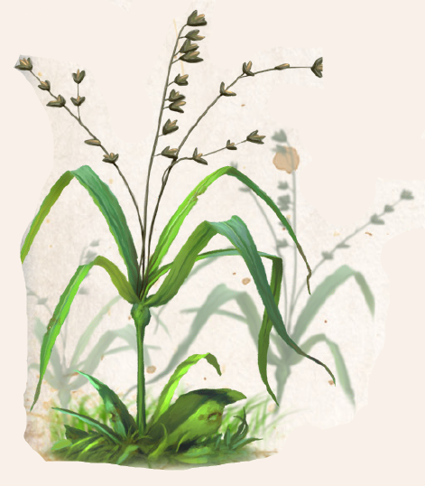

Überall in nördlichen Grasländern und dort vor allem an Gehölzrändern wächst das Fünffingerkraut, ein bis zu kniehohes Gras. Vermutlich waren es Hochelfen, vielleicht auch Orks, die entdeckten, dass aus dem Gras ein Elixier gebraut werden kann, welches für eine ruhige Hand sorgt und die Fingerfertigkeit verbessert. Vielen Menschen gilt das Fünffingerkraut daher als phexgefällige Pflanze. Andere ordnen es eher dem Wintergott Firun zu, denn es keimt bereits im beginnenden Winter und überdauert auch große Kälte, Eis und Schnee. Werden die Tage länger und wärmer, wachsen die zarten Grashalme zügig und bilden an günstigen Standorten lockere Rasenflächen. Im Praios setzt die Blüte ein. Dann hängen an kurzen Stängeln kleine, kurz gestielte, nickende, zweiblütige Ähren von glänzend violetter oder weiß-grüner Farbe. Mit der Blüte wird das Gras jedoch zäh, gar spröde, und taugt nur noch als Futterpflanze.
Um zu einem Fingerfertigkeitselixier weiter verarbeitet zu werden, muss das Gras vor den Namenlosen Tagen geerntet und zügig verwertet werden. Wird es hingegen zwischen den Jahren, also nach dem 30. Rahja und vor dem 1. Praios, geerntet, können mit einem daraus gefertigten Elixier nur dem Namenlosen gefällige oder nützliche Taten vollbracht werden. Ein solchermaßen verderbtes Elixier ist kaum von einem reinen zu unterscheiden, einzig vor Praios- oder Madamal gehalten offenbart sich dem aufmerksamen Betrachter ein leicht purpurner Schimmer in der Flüssigkeit.
Alternative Namen: risca`nihla (Isdira für „Nickendes Perlgras“)
Verbreitung:
Landschaftstyp: Grasländer, Heiden und Steppen
Regionen: Nördliches Hochland (Strauchsteppe), Nördliche Grasländer und Steppen
Suchschwierigkeit: -2
Bestimmungsschwierigkeit: -2
Anwendungen: 1/2/2/2/2/3
Wirkung:
Roh:
Berührung: keine
Einatmung: keine
Verzehr: keine
Verarbeitet: siehe Rezepte
Preis: 3 / 4 Silbertaler
Rezepte:
Elixiere: Fingerfertigkeitselixier
Alltagsarzneien und Volksbrauchtum: Einige Alchimisten des Nordens behaupten, besonders potente Elixiere ließen sich aus Fünffingergras fertigen, das bei dichtem Nebel geerntet wurde, denn der Segen des Listenreichen läge dann offenkundig darauf.
Haltbarkeit:
Roh: siehe Haltbarmachung